Tutorial de Kryptonigma
Todo lo que necesitas para crear tu bóveda, encriptar tus primeros archivos y compartirlos de forma segura. Esta guía se actualiza con cada nueva versión de la app.
01Instalación y Primeros Pasos
Descarga Kryptonigma desde Google Play Store. Al abrir la app por primera vez, te guiará por una breve configuración inicial antes de llegar a tu bóveda.
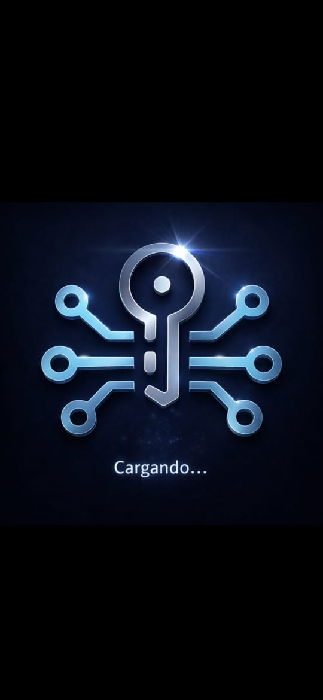
Pantalla de carga
Al abrir la app por primera vez, Kryptonigma prepara tu entorno seguro localmente en el dispositivo. Este proceso es breve y no requiere conexión a internet.
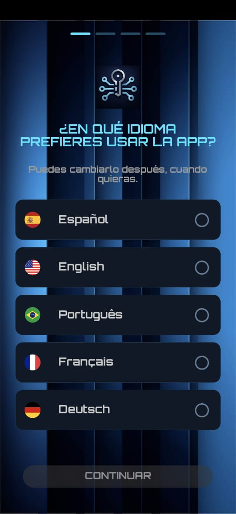
Elige tu idioma
Selecciona el idioma en el que prefieres usar la app. Puedes cambiarlo después en cualquier momento desde el menú de configuración.
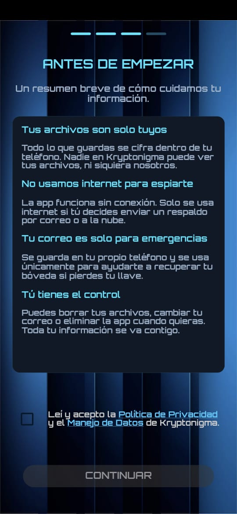
Antes de empezar
Un resumen breve de cómo Kryptonigma cuida tu información: tus archivos son solo tuyos, no se usa internet para espiarte, tu correo es solo para emergencias y tú tienes el control total.
Marca la casilla para aceptar la Política de Privacidad y el Manejo de Datos, y presiona Continuar.
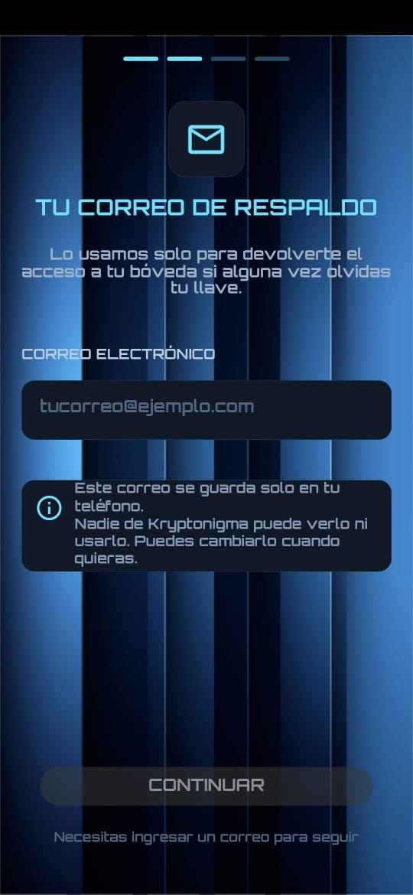
Tu correo de respaldo (opcional)
Este correo se usa únicamente para devolverte el acceso a tu bóveda si alguna vez olvidas tu llave de encriptación. Se guarda solo en tu teléfono — nadie en Kryptonigma puede verlo ni usarlo, y puedes cambiarlo cuando quieras.
02Menú Lateral
Desde el ícono de menú (☰), en la esquina superior izquierda, accedes a todas las funciones de Kryptonigma.
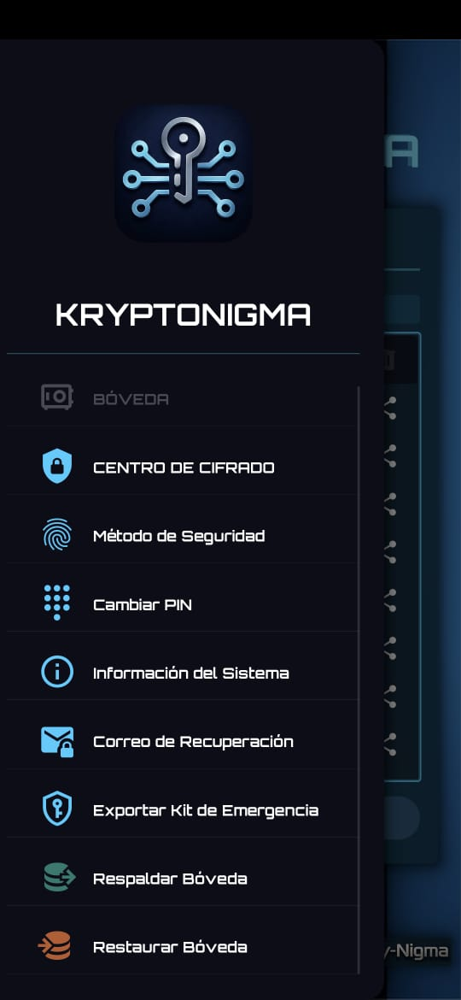
Todo a un toque de distancia
- Bóveda — tu espacio de archivos encriptados.
- Centro de Cifrado — encripta archivos o crea notas seguras.
- Método de Seguridad — configura huella digital o PIN.
- Cambiar PIN — actualiza tu código de acceso.
- Información del Sistema — datos técnicos de la app.
- Correo de Recuperación — gestiona tu correo de respaldo.
- Exportar Kit de Emergencia — respalda tu llave de forma segura.
- Respaldar / Restaurar Bóveda — copia de seguridad completa.
03La Bóveda: tu espacio seguro
La bóveda es el corazón de Kryptonigma. Desde allí puedes ver y gestionar todos tus archivos encriptados, organizarlos en carpetas, y compartirlos cuando quieras.
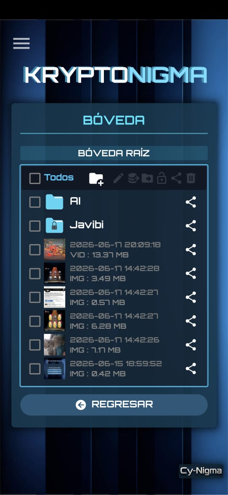
Organiza tus archivos
- Crea carpetas (como "AI" o "Javibi" en el ejemplo) para ordenar tus archivos.
- Las carpetas con ícono de candado tienen protección adicional.
- Cada archivo muestra su fecha, tipo (IMG, VID) y peso.
- Selecciona uno o varios archivos con los checkboxes para editarlos, moverlos, compartirlos o eliminarlos en bloque.
04Centro de Cifrado
El Centro de Cifrado es el punto de entrada para encriptar cualquier archivo de tu teléfono — fotos, documentos, PDFs, lo que sea.
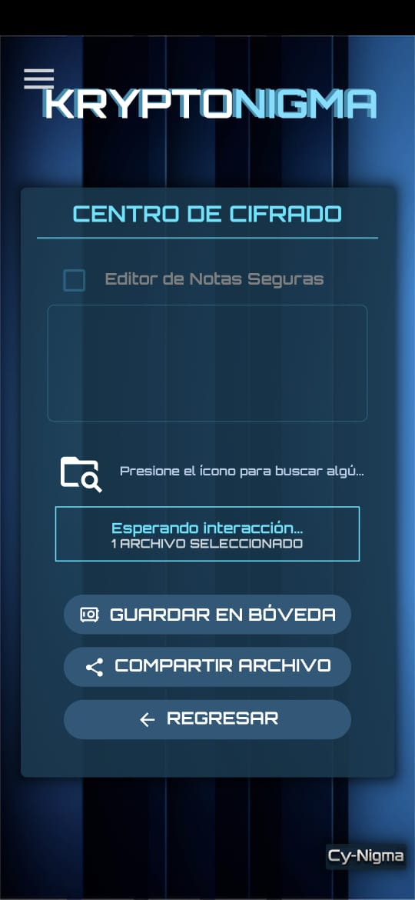
Encripta un archivo
- Presiona el ícono de carpeta para buscar el archivo en tu dispositivo.
- Una vez seleccionado, verás la confirmación "1 archivo seleccionado".
- Guardar en Bóveda lo encripta y lo guarda dentro de la app.
- Compartir Archivo lo encripta y lo envía directo a otra app (WhatsApp, correo, etc.).
05Editor de Notas Seguras
Dentro del Centro de Cifrado también puedes activar el Editor de Notas Seguras para escribir y encriptar texto directamente, sin necesidad de un archivo — ideal para contraseñas, claves o información sensible que quieras anotar.
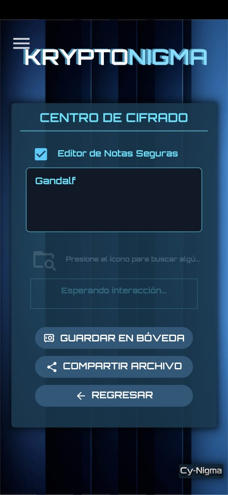
Activa el editor
Marca la casilla "Editor de Notas Seguras" para habilitar el campo de texto. Mientras esté vacío, los botones de Guardar y Compartir permanecen deshabilitados.
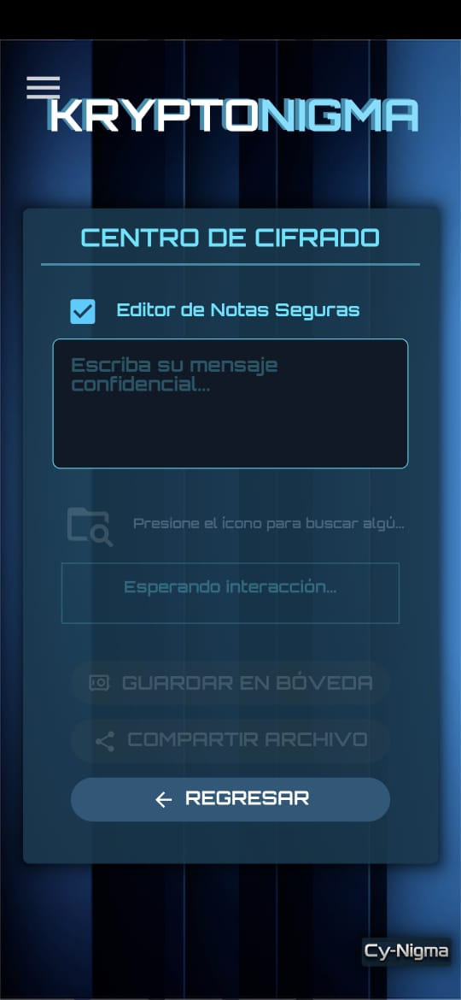
Escribe y encripta tu nota
En cuanto escribes contenido, se habilitan Guardar en Bóveda y Compartir Archivo. La nota se encripta igual que cualquier otro archivo.
06Llave de Encriptación
Al guardar o compartir un archivo, defines la llave que lo protege.
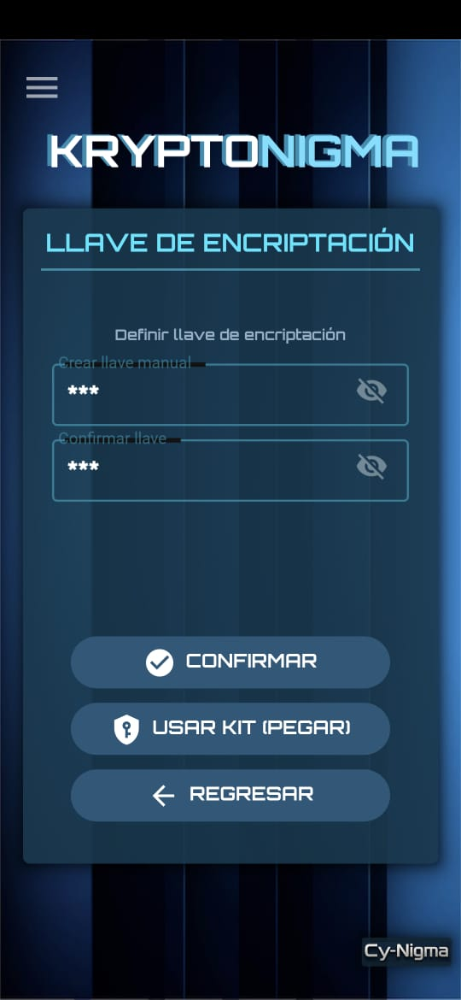
Define tu llave
- Escribe una llave en Crear llave manual y confírmala en el campo siguiente.
- El ícono de ojo te permite mostrar u ocultar lo que escribes.
- Usar Kit (Pegar) te permite pegar una llave que ya tengas guardada, en vez de escribirla de nuevo.
07Eliminar Archivos
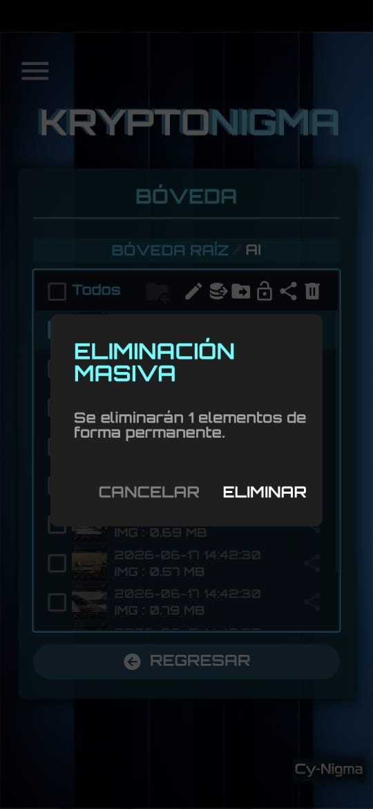
Eliminación con confirmación
Selecciona uno o varios archivos y presiona el ícono de papelera. Kryptonigma siempre pide confirmación antes de borrar, porque la eliminación es permanente.
08Preguntas Frecuentes
La defines tú mismo al guardar o compartir cada archivo. También puedes reutilizar una llave guardada con la opción "Usar Kit (Pegar)".
Si registraste un correo de respaldo, puedes usar el Kit de Recuperación de Emergencia desde el menú lateral. Sin correo registrado, la recuperación no es posible — por eso es clave guardar bien tu llave.
No. Kryptonigma es una aplicación completamente offline. Cy-Nigma no retiene, almacena ni tiene acceso a ningún dato del usuario, salvo el correo de respaldo que tú decidas registrar.
No. La aplicación funciona completamente offline. Internet solo se necesita si decides respaldar en la nube o compartir un archivo por otra app.
Sí. Para desencriptar y ver un archivo compartido, el destinatario debe tener Kryptonigma instalado y la llave que tú le proporciones.